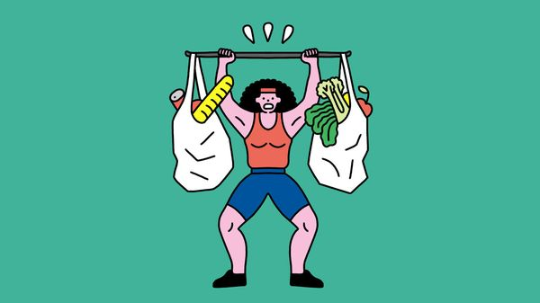

Jul 09, 2026 05:22 AM

FEW THINGS are as unambiguously good for you as exercise. Besides making you fitter and stronger, it cuts your risk of heart disease, strokes, diabetes, many types of cancer and more.
But how much of the cure-all do you really need? The World Health Organisation (WHO) recommends at least 150 minutes a week of moderate activity, such as easy jogging or cycling, and two sessions a week of strength training. Many still fall short. In America, for instance, less than half of adults meet the minimum recommendations for just cardiovascular exercise alone.
Those who hate pounding the pavements need not despair, though. Even a little exercise is better than none. And a growing pile of evidence suggests that might be true even with very small amounts of exercise indeed: potentially just a few minutes a day.
Scientists have long known that the returns to exercise are not constant. The biggest benefits come from doing any at all. Doing lots is better than doing just a little, but the relative improvement is smaller. A meta-analysis published in 2015 pooled data covering around 660,000 people in America and compared the amount of exercise participants claimed to do with the number who died over the following years (the average follow-up period was 14 years).
Compared with those who did no exercise at all, people who reported doing less than the WHO’s minimum had a 20% lower chance of dying over the follow-up period. Those who did between one and two times as much as the WHO guidelines saw their risk fall by 31%. The truly keen, who did two to three times more than advised, saw a drop of 37%—a much smaller jump than those who went from nothing to just a little.
One problem with such studies is that they rely on self-reporting, which is often unreliable. Newer studies use wearable sensors, which are more reliable and which allow more granular measurements. They suggest that even tiny, irregular spurts of exercise can have powerful health benefits.
In 2022 a group of researchers published a study that crunched data from 25,000 British people who did no organised exercise. The researchers were interested in “vigorous intermittent lifestyle physical activity”, or VILPA—short bursts of relatively intense exercise undertaken in daily life, such as running for a bus or climbing steep stairs.
Few of the participants did much VILPA—the median was just 4.4 minutes per day. But even that was associated with a reduction in the chance of dying, from any cause, of up to 30% in the following seven years for which the average participant was monitored. The correlation persisted even after the researchers tried to account for the idea that causality might run the other way, with only the already healthy capable of performing VILPA.
Exactly why VILPAs seem to be so good for you is not yet clear (one theory is that they work in essentially the same way as high-intensity interval training, a quick but demanding method of getting into shape). But inspired by the results, some academics have started advocating “exercise snacks”: short bursts of activity that even the most gym-shy or time-pressed should be able to manage. Do some bodyweight squats while waiting for the kettle to boil, say, or knock out some star jumps during a dull Zoom meeting (but don’t forget to turn the camera off first). As the old saying goes, every little helps. In fact, it may help much more than you think. ■
After a free, evidence-based guide to health and wellness? Sign up to our weekly Well Informed newsletter.